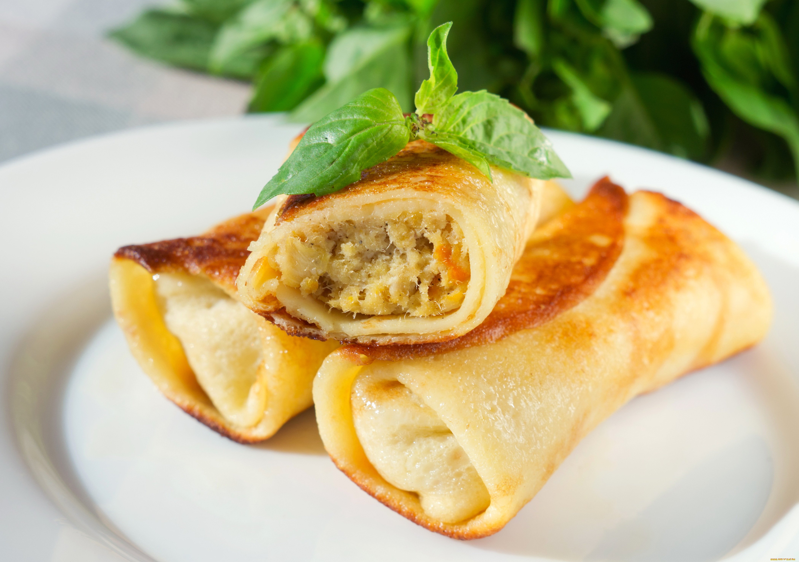

Блинчики на молоке

Ингредиенты
- Яйца - 3 штуки
- Мука - 220 - 240 грамм
- Сахар - 2 столовая ложка
- Соль - 1/4 чайной ложки
- Молоко - 500 милилтров
- Сода пищевая - 1/4 чайной ложки
- Масло растительное - 2 - 3 столовых ложки + для смазывания
Способ приготовления
Сегодня мы с Вами приготовим Блинчики, которые можно быстро приготовить на завтрак для своей семьи.
- Взбейте венчиком яйца с сахаром и солью. Влейте примерно 10 мл тёплого молока и взбейте еще раз.
Всыпьте просеянную муку и соду, тщательно перемешайте.
- Постепенно влейте оставщееся тёплоё молоко, перемешивая тесто до однородной консистенции.
добавьте масло, взбейте и дайте тесту настояться 10 - 15 минут.
- Смажте сковороду небольшим количеством масла и хорошо разогрейте.
Покройте дно тонким слоем теста и обжарьте на среднем огне с обеих сторон до золотистого цвета.
- Смазывать сковороду можно только перед приготовлением первого блина.
- Приятного аппетита!
Другие рецепты блинчиков

Лучше всего блинчики подавать теплыми со сметаной или же фаршированными.